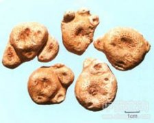

掌叶半夏

拼音
Zhǎnɡ Yè Bàn Xià
别名
独脚莲、独角莲（《南京民间药草》）。
来源
为天南星科植物掌叶半夏的块茎。6～7月挖取块茎，洗净泥土，除去须根，放入筐内，浸于水中，搅拌搓去外皮后，晒干或烘干，干后再用硫黄熏之，使颜色变白。
生境分布
野生于山坡、田野阴湿处。分布河北和长江流域及西南各地。
药材特点
多年生草本。块茎近球形，类似半夏，但较大，径约4厘米。叶柄纤细柔弱，淡绿色，长45～65厘米；叶片掌状分裂，小叶9～11片。肉穗花序顶生，花序柄与叶柄等长或稍长；佛焰苞淡绿色，披针形，下部筒状，长圆形，先端锐尖，长8～14厘米：花单性，无花被，雌雄同株；雄花着生在花序上端，雄蕊密集成圆筒状，长约6毫米，有香蕉香气；雌花着生在花序下部，贴生于苞片上，长约1.5厘米；花序先端附属物线状，长约9厘米，稍弯曲。浆果卵圆形，绿色，长4～5毫米，径2～3毫米，内含种子1粒。花期6～7月。
性状
块茎近球形，直径3～4厘米，外皮粗糙，褐色，有时尚留有已枯叶柄的基部。剥去外皮为类白色而呈粉状，上部散有细凹点，与半夏在外形上很难区别，但一般形体比较大。 本品在江苏、河北、河南、山西等地作半夏使用。两者的区别，详"半夏"条。
性味
《广西中药志》："味辛，性平，有毒。"
功能主治
①《南京民间药草》："治肿毒。" ②《广西中药志》："治毒蛇咬伤及无名肿毒。"
用法用量
外用：捣敷或研末调敷。
化学成分
无化学成分数据
药理作用
1：无药理作用数据
摘录
《中药大辞典》